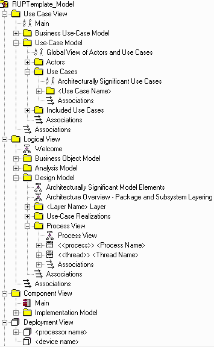

Tool Mentor:
Creating a Use-Case Model Survey Using Rational SoDA
Purpose
This tool mentor describes how to use Rational SoDA to create a Use-Case
Model Survey. SoDA automates the generation of the report so that it is created
quickly and accurately. You can generate a Use-Case Model Survey with either the
Microsoft Word or Adobe FrameMaker version of SoDA. This works only if the
Rational Rose model follows the structure
and naming convention for the Use-Case Model.
Related Rational Unified Process information:
Overview
This tool mentor is applicable when running Windows 98, Windows 2000, NT 4.0,
Windows XP, Solaris or HP-UX.
To create a Use-Case Model Survey Report using SoDA, use the procedure for
your version of the product:
- From anywhere in Rational Rose, click Report > SoDA Report.
- When the list of available reports appears in SoDA, select Rational
Unified Process Use-Case Model Survey.
- Click OK to generate the report.
- From the FrameMaker button-bar, click New. Double-click SoDA,
then double-click RoseDomain and choose the RUPUseCaseModelSurvey.fm
template.
- Edit the Connector and enter the name of the model file.
- Click File > Save As to save the template to a personal or
project directory.
- Click SoDA > Generate Document.
- Review the generated document.
The next time you want to generate this same document, simply open the
document and click SoDA > Generate Document.
 |
Elements from the Use-Case Model will be extracted into the Use-Case
Model Survey. |
Copyright
© 1987 - 2001 Rational Software Corporation
|  Tool Mentors >
Rational SoDA Tool Mentors >
Tool Mentors >
Rational SoDA Tool Mentors >
 Creating a Use-Case Model Survey Using Rational SoDA
Creating a Use-Case Model Survey Using Rational SoDA